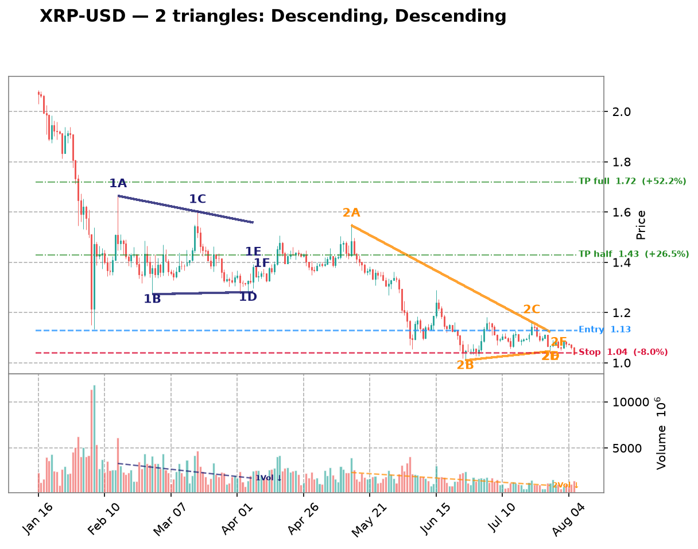
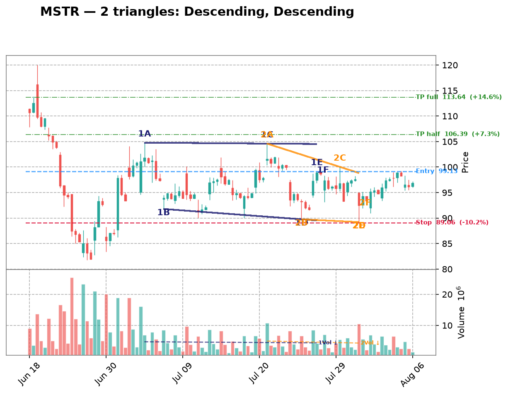
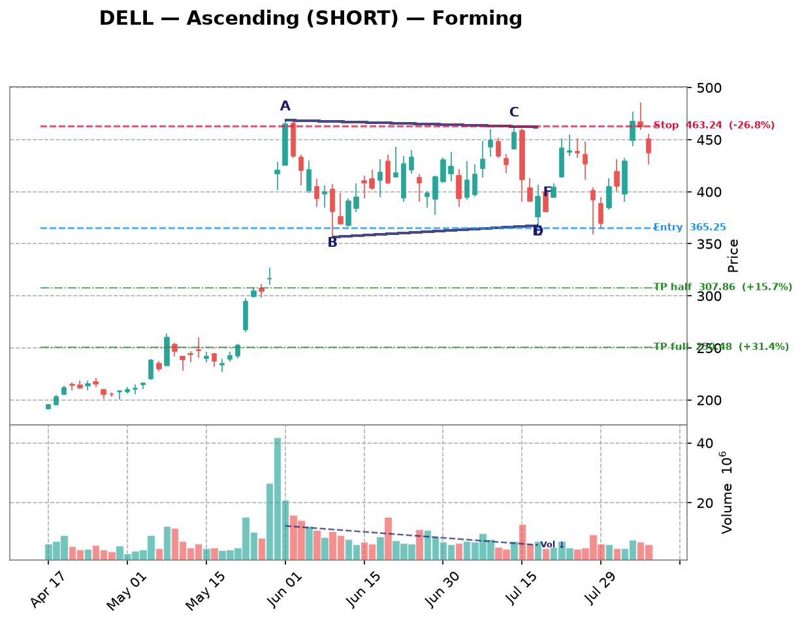

| Date | Symbol | TF | Pattern | Dir | Verdict | Claude Pattern | Claude Dir | Conf | Rec |
|---|---|---|---|---|---|---|---|---|---|
| crypto 10 patterns | |||||||||
| 2026-08-15 | DOGE-USD | 1d | Descending | LONG | Disputed | ? | ? | Certainty: 82 | — |
Chart  Claude Notes The right edge of the chart (late June through early August) shows price in a persistent downtrend that has flattened into a tight, low-volatility range around 0.068-0.075, but this looks like consolidation after a decline rather than a descending triangle. There isn't a clear horizontal support line being tested multiple times with clean lower highs converging into it - instead price has just compressed into a narrow sideways band with declining volume, more consistent with a flag/consolidation than a triangle with defined converging trendlines. The algorithm may have picked up on the flat-ish bottom (~0.068-0.070) and the recent lower highs from the June peak (~0.083) down to current levels (~0.075), which is a plausible descending triangle read, but the touches are inconsistent and the recent candles look more like a flat range than a converging wedge. Given the ambiguity, I lean toward not confirming a clean triangle setup. Presence certainty 82/100 — how sure Claude is that its found/not-found call is correct | |||||||||
| 2026-08-15 | VET-USD | 1d | Descending | LONG | Disputed | ? | ? | Certainty: 75 | — |
Chart  Claude Notes From late June through late July, price has been trading in a tight, roughly flat range between ~0.0044 and ~0.0050 with no clear convergence - both highs and lows are essentially flat, forming more of a rectangle/consolidation than a descending triangle. A descending triangle requires a clearly falling upper trendline (lower highs) with a flat support; here the highs are not consistently declining, they oscillate sideways. There's no visible apex or compression narrowing toward a point. This looks like sideways consolidation after a strong downtrend (from ~0.008 in May to ~0.0045), which could still resolve either direction, but the geometric criteria for a triangle (converging trendlines with multiple respected touches) aren't clearly met. I disagree with the algo's flag - this is more likely basing/consolidation than an active triangle breakout setup. Presence certainty 75/100 — how sure Claude is that its found/not-found call is correct | |||||||||
| 2026-08-15 | XRP-USD | 1d | Descending | LONG | Disputed | ? | ? | Certainty: 75 | — |
Chart  Claude Notes The right side of the chart (Jun-Aug) shows a downtrend that flattens into a choppy, range-bound consolidation between roughly 1.05 and 1.20, but this looks more like sideways congestion/noise than a clean descending triangle. There's no clear series of lower highs converging toward a flat support - highs are fairly flat around 1.15-1.20 and lows are also fairly flat around 1.05-1.10, which would suggest a rectangle/range rather than a converging triangle. I don't see the upper trendline declining in a consistent stepped fashion to meet a flat bottom - both boundaries look roughly horizontal with overlapping wicks, not a converging apex. This doesn't meet the criteria for a credible descending triangle; it looks like consolidation after a downtrend without clear convergence. Presence certainty 75/100 — how sure Claude is that its found/not-found call is correct | |||||||||
| 2026-08-15 | ETH-USD | 1d | Symmetric | SYMMETRIC | Disputed | ? | ? | Certainty: 75 | — |
Chart  Claude Notes The right side of the chart (late Jun-Jul) shows price recovering from ~1600 to a tight consolidation around 1850-1950, but this looks more like a flat/rectangular range or slight uptrend channel rather than a converging triangle. Highs are roughly flat (~1950) and lows are roughly flat (~1830-1870), not clearly converging - there's no strong narrowing wedge shape. The broader chart shows a clear downtrend from ~2450 (late Apr) to ~1550 (mid-Jun) followed by a basing/recovery move, not a symmetric triangle apex. Too few clear converging touch points on both sides to confidently call this a triangle; it reads more as consolidation after a downtrend. Presence certainty 75/100 — how sure Claude is that its found/not-found call is correct | |||||||||
| 2026-08-15 | SOL-USD | 1d | Symmetric | SYMMETRIC | Both agree | Symmetric | SYMMETRIC | Quality: 40 | monitor |
Chart  Claude Notes From late June to late July, price pulls back from ~83 to the 72-79 range and consolidates. Highs step down slightly (83->79->78->77) forming a mild descending upper boundary, while lows stay fairly flat/slightly rising (73-76), giving a loose converging look. However, touches are inexact and price action is choppy/noisy rather than cleanly respecting two well-defined trendlines, so this is a weak, low-quality symmetric triangle rather than a textbook setup. Right edge shows price still compressing near 72-75 without a clear breakout yet. Symbol Research SOL-USD is Solana, a high-throughput layer-1 blockchain supporting smart contracts, DeFi, and NFTs. It competes with Ethereum on speed/cost but has faced historical network outage concerns. Price action is highly correlated with broader crypto market cycles and BTC/ETH sentiment, with additional sensitivity to Solana ecosystem developments (DeFi TVL, meme coin activity, ETF speculation). Market Sentiment neutral Presence certainty 55/100 — how sure Claude is that its found/not-found call is correct Pattern quality 40/100 — how clean/tradable this specific triangle is Research confidence 55/100 — Phase B research conviction Supporting Signals
Opposing Signals
| |||||||||
| 2026-08-15 | MANA-USD | 4h | Ascending | SHORT | Disputed | ? | ? | Certainty: 80 | — |
Chart  Claude Notes The right side of the chart (late July into August) shows a fairly flat, choppy consolidation around 0.0655-0.0680 with no clear rising lower trendline - lows are roughly flat to slightly declining, not making higher lows. There's no discernible ascending triangle structure; instead price shows a downtrend from mid-July highs (~0.075) into a flat, range-bound consolidation near the lows. This looks more like a flat/rectangular consolidation or a minor descending drift rather than an ascending triangle with rising support. No clear convergence between two well-defined trendlines is visible near the current price action. Presence certainty 80/100 — how sure Claude is that its found/not-found call is correct | |||||||||
| 2026-08-15 | SAND-USD | 4h | Descending | LONG | Disputed | ? | ? | Certainty: 78 | — |
Chart  Claude Notes The chart shows a clear, sustained downtrend from early July (~0.051) to early August (~0.041) with a brief consolidation/basing period at the right edge (Jul 29 - Aug 6) around 0.041-0.044. This recent consolidation is roughly flat and range-bound rather than a converging wedge - highs and lows are both oscillating in a narrow band without clear convergence toward an apex. There's no well-defined descending upper trendline with lower highs, nor a flat support base with enough touches to confirm a triangle. This looks more like a downtrend followed by a sideways consolidation/potential basing pattern than a descending triangle. The algorithm likely mistook the flat consolidation for triangle compression, but the touch points are inconsistent and the overall structure lacks the clean convergence needed for a valid triangle call. Presence certainty 78/100 — how sure Claude is that its found/not-found call is correct | |||||||||
| 2026-08-15 | XLM-USD | 3h | Descending | LONG | Disputed | ? | ? | Certainty: 82 | — |
Chart  Claude Notes The chart shows a clear downtrend since early July with a series of lower highs and lower lows (0.21 -> 0.19 -> 0.185 -> 0.18 -> 0.17 -> 0.16). There's no flat or rising support line - lows keep making new lows throughout, and the right edge shows continued decline with no compression or convergence into an apex. This looks like a steady downtrend/staircase pattern rather than an ascending triangle. The algorithm's flag appears to be a false positive - there's no clear rising support trendline with 2+ touches, and the 'highs' are also declining, not flat, ruling out ascending triangle characteristics. No credible converging structure is visible near the right edge. Presence certainty 82/100 — how sure Claude is that its found/not-found call is correct | |||||||||
| 2026-08-15 | ETC-USD | 3h | Descending | LONG | Disputed | ? | ? | Certainty: 80 | — |
Chart  Claude Notes The chart shows a clear, persistent downtrend from ~7.2 to ~6.4 with consistently lower highs and lower lows throughout - not a consolidation pattern. There's no flat support line; lows keep dropping (7.0 -> 6.8 -> 6.6 -> 6.4). This is a descending channel/downtrend, not a descending triangle, since a descending triangle requires a flat/horizontal support base with repeated tests at the same level. Here support keeps eroding lower with no clear horizontal floor. The algorithm likely mistook the overall downward compression for a triangle, but there's no credible flat base with 2+ touches at the same price level to support the pattern. Right edge shows price still declining with no basing/reversal signal, making a LONG bias unsupported by the visual structure. Presence certainty 80/100 — how sure Claude is that its found/not-found call is correct | |||||||||
| 2026-08-15 | VET-USD | 3h | Ascending | SHORT | Disputed | ? | ? | Certainty: 78 | — |
Chart  Claude Notes The right side of the chart shows a choppy range/decline (Aug 03-06) with lower highs (0.0048 -> 0.0047 -> 0.0046) but no clear rising support line - lows are roughly flat to slightly declining (0.0046-0.0047), not forming higher lows. This looks more like a descending/flat consolidation or minor downtrend rather than an ascending triangle. There's no evidence of a rising lower trendline with 2+ touches, which is required for an ascending triangle. The overall structure since Jul 26 shows a broad W-shaped swing (down to 0.0044, up to 0.0049, back down) with no consistent converging trendlines near the apex on the right edge. I disagree with the algorithm's ascending triangle call - the support isn't rising, and price action looks more like range-bound chop or a mild downtrend. Presence certainty 78/100 — how sure Claude is that its found/not-found call is correct | |||||||||
| crypto-equity 5 patterns | |||||||||
| 2026-08-15 | MSTR | 3h | Descending | LONG | Disputed | ? | ? | Certainty: 68 | — |
Chart  Claude Notes The right side of the chart (mid-July to Aug 06) shows a broad sideways consolidation between roughly 92 and 101, but there's no clear convergence - highs and lows are both roughly flat/choppy rather than narrowing into an apex. Highs bounce between 98-102 and lows between 92-96 without a clean descending upper trendline or flat rising support. This looks more like a rectangular/range-bound consolidation than a converging triangle. The algorithm's descending triangle call isn't well supported since the upper boundary isn't consistently making lower highs into a point - it's oscillating rather than converging. Not enough clear compression to call this a valid triangle setup. Presence certainty 68/100 — how sure Claude is that its found/not-found call is correct | |||||||||
| 2026-08-09 | MSTR | 1h | Ascending | SHORT | Disputed | ? | ? | Certainty: 78 | — |
Chart  Claude Notes The right-side price action (late Aug 5 into Aug 6) shows a decline from ~99 to ~96.5 with lower highs and lower lows together — this looks like a mild downtrend/pullback rather than a converging triangle with a rising support line. There's no clear rising trendline of higher lows; instead both highs and lows are declining in tandem, more consistent with a small descending channel or simple retracement than an ascending triangle. No flat resistance line is visible either (highs are dropping from ~99 to ~97.5 to ~97). I don't see the two clearly converging trendlines required for a valid triangle at the right edge, so I disagree with the algorithm's ascending triangle / short flag. Presence certainty 78/100 — how sure Claude is that its found/not-found call is correct | |||||||||
| 2026-08-09 | CIFR | 1h | Descending | LONG | Disputed | ? | ? | Certainty: 78 | — |
Chart  Claude Notes The chart shows a series of large swing oscillations (roughly 26->18->24->17->26->18->25->18) rather than a converging structure. Each swing has similar amplitude, indicating a broad trading range/downtrend with volatility rather than a narrowing triangle. Near the right edge, price is declining from ~25 to ~18-19 with no flattening support line or clear lower highs converging into an apex - the recent candles show a steady downward slide, not compression. There is no consistent horizontal support with descending highs; the swings are too wide and repetitive to qualify as a descending triangle. I disagree with the algorithm's flag - this looks like continued range-bound/down-trending price action, not a triangle nearing apex. Presence certainty 78/100 — how sure Claude is that its found/not-found call is correct | |||||||||
| 2026-08-09 | MARA | 1h | Descending | LONG | Disputed | ? | ? | Certainty: 78 | — |
Chart  Claude Notes {
"found_triangle": false,
"pattern_type": null,
"direction": null,
"presence_confidence": 78,
"pattern_quality": null,
"notes": "The chart shows an overall downtrend with successive lower highs (15, 14, 13, 12.7, 12) and lower lows (12, 11.8, 10.7, 10, 10.7), forming a descending staircase rather than a converging triangle. There's no flat/horizontal support line - the lows are also declining, not holding at a consistent level. At the right edge, price is consolidating in a tight range around 10.7-12 but without clear evidence of a rising lower boundary or flat lower support meeting a descending upper trendline with 3+ touches each. This looks more like a broader downtrend with intermittent consolidation than a well-defined descending triangle. The algorithm's flag is plausible given the recent narrowing range, but the lower boundary isn't flat - it's still sloping down, making this more consistent with a bearish channel/flag than a classic descending triangle setup for a LONG bias, which would typically need a firm horizontal support.",
} Presence certainty 78/100 — how sure Claude is that its found/not-found call is correct | |||||||||
| 2026-08-09 | IREN | 1h | Symmetric | SYMMETRIC | Disputed | ? | ? | Certainty: 72 | — |
Chart  Claude Notes The chart shows a broad downtrend from late June (~57) into a choppy bottoming/ranging structure from mid-July through early August, oscillating between roughly 30 and 44 with multiple swing highs and lows of similar magnitude - more like a wide horizontal range than a converging wedge. Near the right edge (early August), price is bouncing between ~37-41 without clear narrowing of highs and lows; recent candles show similar range width to prior weeks rather than compression toward an apex. I don't see two clearly converging trendlines with consistent touch points - the swing highs (44, 43, 41) and lows (33, 30, 36) don't form a tight symmetric convergence, they look more like a rounded/ranging base. I disagree with the algorithmic flag; this looks more like consolidation/basing after a downtrend rather than a well-defined symmetric triangle. Presence certainty 72/100 — how sure Claude is that its found/not-found call is correct | |||||||||
| mega-cap 4 patterns | |||||||||
| 2026-08-15 | AMZN | 1d | Descending | LONG | Disputed | ? | ? | Certainty: 82 | — |
Chart  Claude Notes The right side of the chart shows a strong impulsive rally from ~262 to ~287 followed by a pullback to ~272-274, not a compressing triangle. There's no clear flat support or descending resistance with multiple touches - just a sharp spike up and a 3-candle retracement. This looks more like a breakout/pullback continuation setup or early consolidation after a rally, rather than a descending triangle. A descending triangle requires a flat lower support with lower highs compressing into it, but here we only see 5-6 candles at the right edge, insufficient for establishing two converging trendlines with multiple touches. The algorithm likely misread the sharp reversal candles as resistance touches, but there's no clear horizontal support base visible yet. Presence certainty 82/100 — how sure Claude is that its found/not-found call is correct | |||||||||
| 2026-08-15 | NVDA | 1d | Descending | LONG | Disputed | ? | ? | Certainty: 72 | — |
Chart  Claude Notes The right side shows a sharp V-shaped reversal rather than a descending triangle. Price fell to a low near 190 in early August, then rallied strongly and decisively through 200, 210, and up to 220+ over just a few candles with expanding range and strong volume. There's no flat support with declining resistance converging into an apex - instead there's a clear low, then an impulsive breakout candle sequence with no compression or containment pattern visible. The prior July action (Jul 01-25) does show a rough range between ~195-215, but that range breaks down clearly to new lows (~190) before the reversal, invalidating any triangle structure. This looks like a bottom/reversal setup already broken out to the upside, not a still-forming triangle. Presence certainty 72/100 — how sure Claude is that its found/not-found call is correct | |||||||||
| 2026-08-15 | META | 1d | Descending | LONG | Disputed | ? | ? | Certainty: 70 | — |
Chart  Claude Notes The right side of the chart shows a volatile downtrend with a sharp drop to ~530, a bounce to ~650, then decline to ~590-600 with choppy consolidation. There's no clear flat support line - lows are irregular (530, then 585, 595, 570) and highs are also irregular, not forming consistent lower highs converging toward a flat base. This looks more like choppy range-bound consolidation after a downtrend rather than a well-defined descending triangle. The algorithm's flag is questionable since touch points on both support and resistance are not clean or consistent enough to confirm reliable trendlines converging toward an apex. Presence certainty 70/100 — how sure Claude is that its found/not-found call is correct | |||||||||
| 2026-08-15 | GOOGL | 4h | Ascending | SHORT | Disputed | ? | ? | Certainty: 82 | — |
Chart  Claude Notes The right side of the chart shows a strong uptrend from ~320 to a peak near 383, followed by a sharp two-candle reversal down to ~358, then consolidation around 357-365. This is not a converging triangle - there's no clear flat resistance being tested multiple times, nor a rising support line with multiple higher-low touches. The recent price action looks more like a sharp spike top and pullback/consolidation rather than a compressing wedge. There aren't at least two clean touches on both an upper and lower trendline converging toward an apex - the 'highs' are really just one spike candle, and the lows before the rally were much lower (320s) making any support line drawn from there to now would have an unrealistically steep slope, not a gentle ascending line. This looks like a failed/invalid pattern call by the algorithm. Presence certainty 82/100 — how sure Claude is that its found/not-found call is correct | |||||||||
| semiconductors 3 patterns | |||||||||
| 2026-08-15 | ADI | 4h | Descending | LONG | Both agree | Descending | LONG | Quality: 45 | monitor |
Chart  Claude Notes Price fell sharply from ~445 in late June to ~360 by early August, then began forming a base. Since mid-July, lows have consistently held around 355-365 (support flattening), while highs have been declining from ~400 to ~380 (lower highs converging down). This creates a loose descending triangle shape with support near 355-360 and a downward-sloping resistance from ~400 down to ~380. The last few candles (Aug 01-05) show a small bounce off support with tightening range, suggesting compression near the apex. However, touches on the support line are somewhat irregular (355-365 range rather than a precise flat line), and the resistance line has only 2-3 clean touches. This is a plausible but not textbook pattern - the overall downtrend is decelerating with narrowing range, consistent with the algorithm's flag, but conviction is moderate given the noisiness of touch points. Symbol Research Analog Devices (ADI) is a leading semiconductor company specializing in analog, mixed-signal, and DSP chips used in industrial, automotive, communications, and consumer applications. It has significant exposure to industrial automation and automotive electrification trends, with recent focus on recovery from post-pandemic inventory destocking cycles affecting the broader analog chip sector. Market Sentiment neutral Presence certainty 55/100 — how sure Claude is that its found/not-found call is correct Pattern quality 45/100 — how clean/tradable this specific triangle is Research confidence 48/100 — Phase B research conviction Supporting Signals
Opposing Signals
| |||||||||
| 2026-08-09 | LRCX | 1h | Ascending | SHORT | Disputed | ? | ? | Certainty: 72 | — |
Chart  Claude Notes The right-side price action (early Aug) shows a choppy range between roughly 305-320, but there's no clear ascending support line—lows are flat/noisy (around 305-308) rather than making distinct higher lows, and the highs are also roughly flat (~315-320) rather than converging. This looks more like a horizontal consolidation/rectangle than a true ascending triangle. The algorithm likely flagged minor higher-low bumps, but there aren't 2-3 clean touch points forming a rising trendline distinct from a flat one. Prior to this, price action from mid-July was a clear downtrend with lower highs/lower lows, not a triangle. Given the ambiguity of the recent consolidation, I lean toward rejecting the triangle call, though a loose case for a shallow ascending structure isn't impossible. Presence certainty 72/100 — how sure Claude is that its found/not-found call is correct | |||||||||
| 2026-08-09 | AMAT | 1h | Symmetric | SYMMETRIC | Disputed | ? | ? | Certainty: 72 | — |
Chart  Claude Notes The right side of the chart shows a rally from ~500 to ~555 followed by a pullback to ~530, but this looks like a rounded top / pullback within a broader swing rather than a converging triangle. There's no clear sequence of lower highs meeting higher lows - the recent candles (Aug 03-08) show a peak around 555 then a fairly sharp drop to 530, which is more consistent with a short-term downtrend or consolidation than a symmetric wedge. I don't see at least two clean, roughly parallel converging trendlines with multiple touches on each side near the apex. The algorithm may be reacting to the general narrowing of range after the spike, but the touch points are too few and inconsistent to confirm a genuine symmetric triangle. Presence certainty 72/100 — how sure Claude is that its found/not-found call is correct | |||||||||
| forex 2 patterns | |||||||||
| 2026-08-09 | EURUSD=X | 1h | Ascending | SHORT | Disputed | ? | ? | Certainty: 82 | — |
Chart  Claude Notes The right side of the chart shows a clear downtrend from the Aug 5 peak (~1.156) into Aug 6, with lower highs and lower lows in a fairly consistent decline, followed by a flattening/consolidation near 1.1525-1.153. There's no clear rising support line with higher lows to form an ascending triangle - instead price dropped sharply and is now consolidating in a narrow range without a defined converging structure. The algorithm's ascending triangle call doesn't fit since there's no series of higher lows visible; the recent price action looks more like a sharp decline stabilizing at a new lower level rather than a triangle compression. Not enough touch points on both an upper and lower trendline to confirm any triangle pattern near the apex on the right edge. Presence certainty 82/100 — how sure Claude is that its found/not-found call is correct | |||||||||
| 2026-08-09 | NZDUSD=X | 1h | Ascending | SHORT | Disputed | ? | ? | Certainty: 78 | — |
Chart  Claude Notes The right side of the chart shows price consolidating in a choppy range between ~0.5865 and ~0.590 after a strong impulsive rally from late July. However, this looks more like a flat/rectangular consolidation than an ascending triangle - the highs are roughly flat (~0.590) but the lows are also fairly flat/choppy (~0.5865-0.587), not showing a clear rising sequence of higher lows. There's no clean converging trendline structure - both boundaries appear roughly horizontal rather than one flat and one rising. This resembles sideways consolidation or a minor pullback/flag after the breakout rather than a textbook ascending triangle with rising support. The algorithm's flag seems to be picking up on the tightening range but the specific 'rising lower trendline' criterion for ascending triangle isn't clearly satisfied here. Presence certainty 78/100 — how sure Claude is that its found/not-found call is correct | |||||||||
| hardware 2 patterns | |||||||||
| 2026-08-15 | DELL | 1d | Ascending | SHORT | Disputed | ? | ? | Certainty: 75 | — |
Chart  Claude Notes The chart shows a strong uptrend from mid-April through early June (~190 to ~460), followed by a wide, choppy consolidation/trading range roughly between 370 and 465 from June through early August, with no clear convergence. Highs and lows are both oscillating within a fairly constant band rather than compressing toward an apex - this looks more like a rectangular/range-bound consolidation than a converging triangle. The recent right-edge price action (late July into early August) shows a higher low near 370 and a push up to ~485, but the upper boundary isn't flattening or clearly capping - it's making a fresh high, which argues against an ascending triangle resistance line. I don't see consistent lower-high resistance touches or a rising support trendline with 3 clean touches; the pattern looks more like broad consolidation/range than a credible ascending triangle. Presence certainty 75/100 — how sure Claude is that its found/not-found call is correct | |||||||||
| 2026-08-09 | STX | 1h | Descending | LONG | Disputed | ? | ? | Certainty: 72 | — |
Chart  Claude Notes The right-side price action (Aug 03–06) shows a choppy, roughly flat range between ~815 and ~890 with no clear convergence — highs and lows are similarly spaced throughout rather than narrowing toward an apex. There's a sharp downside wick near Aug 06 breaking below the recent range low (~780), which argues against a clean descending triangle setup (support was violated, not respected). I don't see a consistent flat support line with lower highs converging into it; instead it looks like sideways consolidation/noise with one outlier spike down. Not enough clean touch points on both a flat lower line and a descending upper line to call this a credible descending triangle. Presence certainty 72/100 — how sure Claude is that its found/not-found call is correct | |||||||||
| space 2 patterns | |||||||||
| 2026-08-15 | GSAT | 1d | Descending | LONG | Disputed | ? | ? | Certainty: 82 | — |
Chart  Claude Notes The chart shows a broad swing from ~80 up to ~84.5 in late May, then a decline into July bottoming near 78.7, followed by a sharp breakout candle in early August that gapped up to ~84. This is not a converging triangle structure - there's no clear flat support with descending resistance forming a narrowing wedge. The late July lows (79-79.5) do look roughly flat, but there's no consistent lower-high resistance line converging into them; instead price just consolidated in a range (79-80.5) for a few weeks before an explosive gap-up breakout. The algorithm likely mistook the range-bound consolidation before the breakout for a descending triangle, but there are insufficient distinct touch points on a descending upper trendline, and the breakout candle is already far beyond any prior structure, meaning the 'triangle' would already be invalidated/completed rather than actively forming near the apex. Presence certainty 82/100 — how sure Claude is that its found/not-found call is correct | |||||||||
| 2026-08-15 | SPCE | 4h | Descending | LONG | Disputed | ? | ? | Certainty: 65 | — |
Chart Claude Notes The chart shows a sharp decline from early June highs (~$6) down to a base around $2.5-2.8 by early July, followed by a long consolidation/basing period through late July at roughly flat lows (~2.5-2.7) and flat highs (~2.9-3.0). This is more of a flat bottoming/ranging structure than a converging triangle - the highs and lows are both roughly horizontal rather than one line sloping to meet the other. Near the right edge, price actually breaks upward out of the range (late July into August, rising from ~2.5 to ~2.9-3.0) with a volume uptick, suggesting a completed breakout rather than an active compressing pattern. There's no clear descending upper trendline with lower highs converging into a flat support - the recent candles show higher lows and higher highs together (upward drift), which contradicts a descending triangle setup. I disagree with the algorithm's flag; this looks like a basing range with an upside breakout already in progress, not a textbook descending triangle still forming. Presence certainty 65/100 — how sure Claude is that its found/not-found call is correct | |||||||||
| adtech 1 pattern | |||||||||
| 2026-08-15 | U | 1d | Ascending | SHORT | Disputed | ? | ? | Certainty: 88 | — |
Chart  Claude Notes The chart shows a clear uptrend from late June through early August with a strong breakout/impulsive rally into early August (price surging from ~29 to ~41 with a large volume spike). There is no visible compression or convergence of highs and lows near the right edge - instead price is expanding upward rapidly with increasing candle ranges and volume, which is the opposite of a triangle's narrowing consolidation. No flat resistance line is visible; highs are steadily rising along with lows. This looks like a breakout/markup phase, not a triangle formation. The algorithm's flag appears to be a false positive - there's no containment pattern, just a strong directional move already underway. Presence certainty 88/100 — how sure Claude is that its found/not-found call is correct | |||||||||
| commodities 1 pattern | |||||||||
| 2026-08-15 | NEM | 4h | Descending | LONG | Disputed | ? | ? | Certainty: 78 | — |
Chart Claude Notes The chart shows a clear V-shaped structure: a decline from ~112 (mid-June) down to a trough near 90 (mid-July), followed by a steady recovery to ~105 by early August. This is a rounded reversal, not a triangle. There's no converging price compression near the right edge — instead price is trending upward with higher highs and higher lows across the last several candles, breaking clearly above the prior consolidation zone (94-98). No descending upper trendline is credible; highs are actually rising, not falling, which contradicts the descending triangle definition. The algorithm likely mistook the general uptrend/recovery structure for a triangle. There's no visible apex or narrowing range at the right edge - price has already broken out upward from the base and is trending, not consolidating. Presence certainty 78/100 — how sure Claude is that its found/not-found call is correct | |||||||||
| fintech 1 pattern | |||||||||
| 2026-08-15 | SOFI | 1d | Descending | LONG | Disputed | ? | ? | Certainty: 78 | — |
Chart  Claude Notes The right side of the chart shows a sharp V-shaped reversal: price dropped sharply to ~14.8 in late July then rallied strongly to ~18.7, with a small pullback at the very end. This is not a converging structure - there's no series of lower highs meeting a flat support line, nor any real compression. The recent candles show a strong impulsive up-move followed by minor consolidation, which looks more like a post-breakout pause than a developing descending triangle. Earlier in the chart there are oscillating swing patterns (Mar-Aug) but none show clean flat support with descending resistance converging near the current price. I don't see at least two clear touches on a flat lower support line combined with two lower highs on a descending upper line near the right edge, so I reject the algorithm's descending triangle call. Presence certainty 78/100 — how sure Claude is that its found/not-found call is correct | |||||||||
| industrials 1 pattern | |||||||||
| 2026-08-09 | RCL | 1h | Ascending | SHORT | Disputed | ? | ? | Certainty: 80 | — |
Chart  Claude Notes The right side of the chart shows price oscillating in a fairly flat range between ~318 and ~330 after a strong impulsive rally from late July. There's no clear rising lower support line - the recent lows (~320-322) are roughly flat or even slightly declining, not making higher lows as required for an ascending triangle. The highs are also roughly flat (~328-330) rather than converging with the lows. This looks more like a consolidation/range or minor pullback after a strong uptrend rather than a converging triangle. I don't see two clear trendlines converging toward an apex - the pattern lacks the compression structure needed. Disagreeing with the algorithm's ascending triangle flag; the structure is closer to a flat consolidation/rectangle than a triangle with rising support. Presence certainty 80/100 — how sure Claude is that its found/not-found call is correct | |||||||||
| internet 1 pattern | |||||||||
| 2026-08-15 | SNAP | 1d | Descending | LONG | Disputed | ? | ? | Certainty: 80 | — |
Chart  Claude Notes The chart shows a broad decline from ~6.3 in early May to a base near 4.3-4.5 through late June/July, followed by a sharp breakout spike to ~5.8 around Aug 3, then pullback. This is not a converging triangle structure - there's no clear flat support with descending resistance converging near the right edge. Instead, price already made a strong impulsive move up (breakout) and is now consolidating/retracing after that spike, which looks more like a post-breakout pullback than a triangle formation. The 'descending triangle' label doesn't fit since there's no flat support line being tested multiple times near current price, and the recent action is a sharp rally not a compression pattern. Volume spike on the rally day supports a breakout move rather than a triangle apex forming. Presence certainty 80/100 — how sure Claude is that its found/not-found call is correct | |||||||||